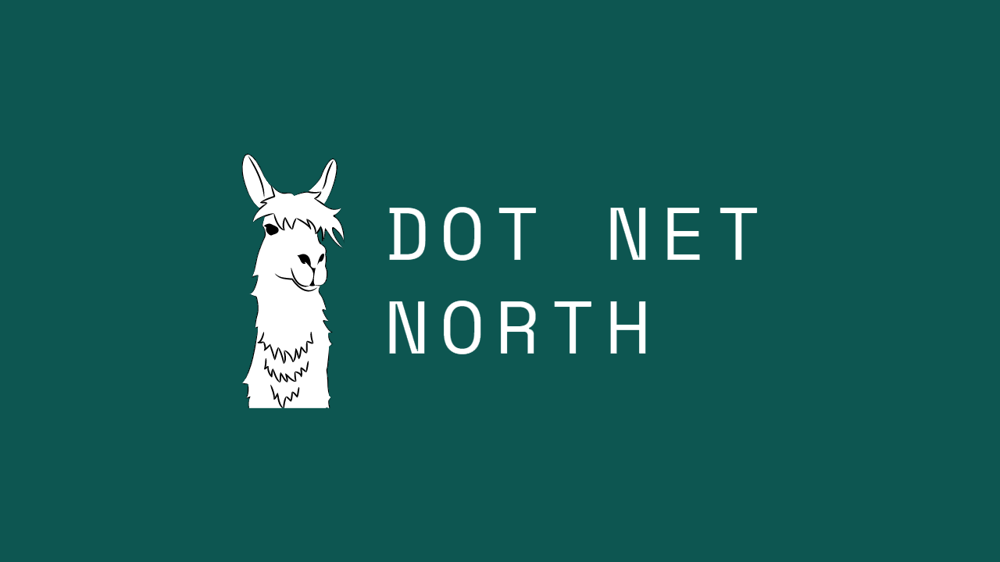

Dot Net North - Uno Platform
This article was originally published 7th June 2022 on Linkedin
Uno Platform - Your apps everywhere by Martin Zikmund
Martin Zikmund for Dot Net North talked about Uno Platform - Your apps everywhereThe Problem
Trying to solve creating applications for multiple platforms, on Windows you need Windows developers, on iOS need Swift developers etc and this isn't efficient to have team to develop things and features multiple times for multiple platforms with a lot of code duplication.
WinUI Everywhere with Uno Platform
Uno Platform is an open-source project from nventive in Canada that allows you to build single codebase applications based on the same API using C# and XAML with the same API set as WinUI. Trys to give you the tools you need to build pixel-perfect UI on many platforms.
Uno Platform has the same exact API set as WinUI with the same namespace, types and members replicated on Uno Platform so the same code can be compiled against the Windows API but also can be compiled for the other targets which will provide the same API to other platforms. You control every pixel with Canvas Rendering, Native Rendering and Lookless / Control Templating so can match the underlying operating system or make it look the way you want. You can check out Uno Platform on the Web at playground.platform.uno and can type in XAML and preview this in real time and try it out without having to install anything.
Uno Platform can also be developed with Visual Studio, you can install the Uno Platform Solution templates in Visual Studio from the Marketplace, once installed will get new templates for Uno Platform. The main ones are Uno Platform App for Xamarin / UWP and Uno Platform App that is based on .NET 6 which is currently available only in preview versions of Visual Studio 17.3. There is also a Uno Platform Library to build shared controls and utilities to share functionality along with a Cross-Platform UI Tests type to create UI tests for Uno Platform applications. When creating an Uno Platform App for Xamarin / UWP will have targets for Android, iOS, macOS, GTK for Linux, Tizen, WPF, UWP and Wasm (Web Assembly). When an application is being debugged with Uno Platform you can use Hot Reload to work on the design of the application with XAML while it is running. All the code for the project is within the Shared Project, only assets usually need to be placed in the platform specific projects. Uno Platform applications also can take advantage of features such as Dark Themes on platforms. With WPF support you can create applications for Windows 7 and Windows 8 along with older versions of Windows 10 that are not supported by WinUI. When running in the Browser all the required libraries or dependencies are downloaded but once done there are no longer any more Network requests to download any application or runtime features.
Uno Platform gives you access to standard UI controls and others like NavigationView, TreeView, ColorPicker, PagerControl and Date Picker - for example the Date Picker was 39 files 600+ Lines of XAML, 11,000 C++ Lines of Code and 30+ Unit Tests which was ported from Win UI and to C# for Uno Platform this was aided with some support from Microsoft for example how Focus Management works in Windows. Theming, styling and templating is supported with Fluent from Microsoft, Material for Android like applications and Cupertino for iOS like applications. You can also make your application look more fluid with animations and access to features like accessibility, visual state / state triggers localisation, conditional XAML which can support platform specific UI controls if needed and native control embedding.
Uno Platform also allows you to access other APIs such as accelerometer, clipboard, gyroscope and more without having to learn anything platform specific as can just use the WinUI APIs, you can check out the UI features that Uno Platform offers with gallery.platform.uno you can also check out some examples of some unexpected APIs that are supported on Uno Platform at cutt.ly/apis such as Network Information, File System such as Folder Picker, Speech recogniser, MIDI, Gamepad and more!
Putting the Platform in Uno Platform
Visual Studio Code support with XAML and C# Code Completion, XAML / C# Hot Reload and code-behind navigation from a XAML File currently supports GTK and WebAssembly support but more when MAUI support is added to Visual Studio Code. Uno Platform also supports Uno Extensions for features like Dependency Injection, Environments, HTTP, Hosting and more. There is also the Uno Toolkit which provides some additional UI controls on top of those provided by WinUI and can be used across all platforms. You can also re-use existing libraries with any .NET Standard 2.0 Library, 3rd party controls and presentation frameworks like Prism and ReactiveUI. There are also Infragistics controls for Uno Platform and Syncfusion integration for various types of charts to visualise and analyse data. There is also Uno Platform for Figma which allows designers to design applications in Figma and then export from into Uno Platform as XAML, you can also within Figma get a live preview of the application and be able to get the full XAML to copy-and-paste this into your application. You can also see what can be done with Uno Platform with calculator.platform.uno showing off the Windows 10 Calculator or nuget.info which allows you to see NuGet packages online. Uno Platform runs everywhere, you can even run applications on Tesla via the browser as they have a closed ecosystem. There is documentation at docs.platform.uno which was recently re-written to include everything you need to know about Uno Platform. You can try Uno Platform at platform.uno or on Discord via platform.uno/discord or to report issues any or contribute to Uno Platform at github.com/unoplatform.